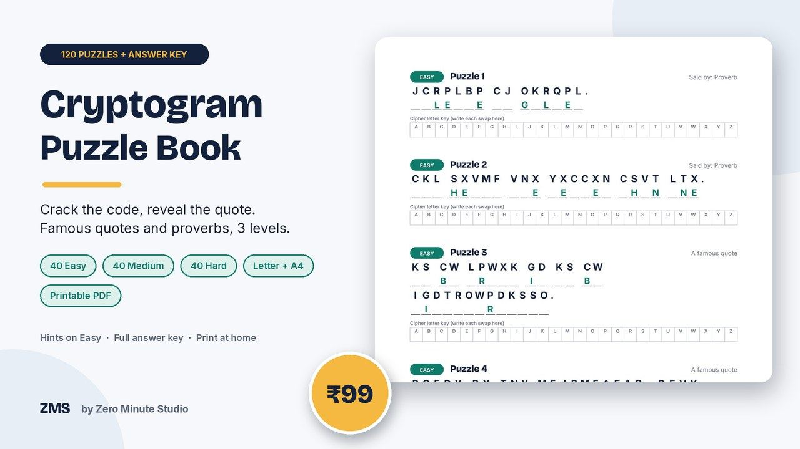
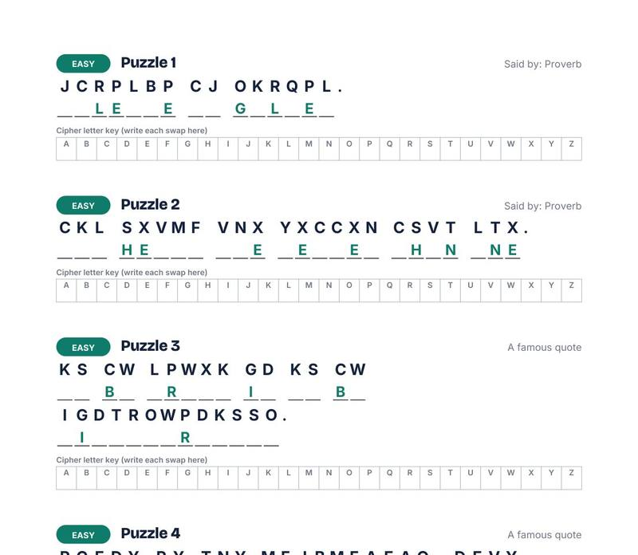
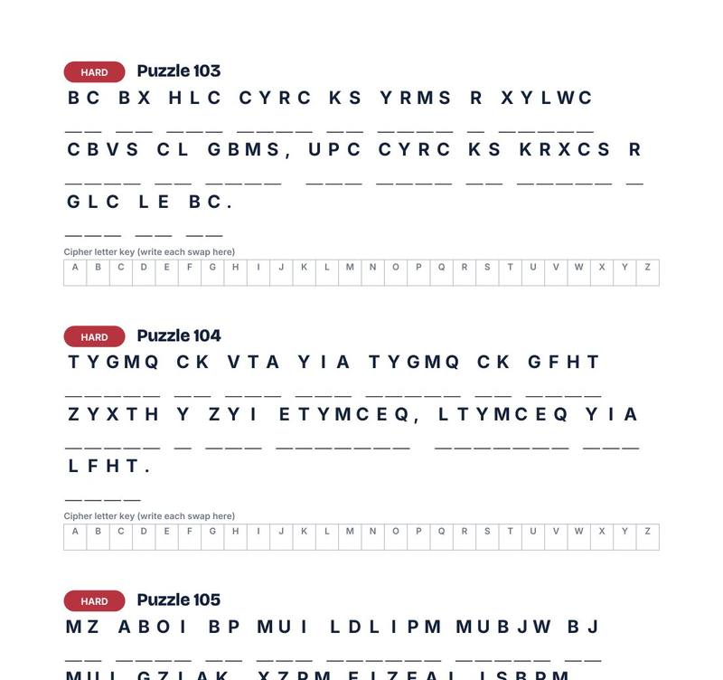
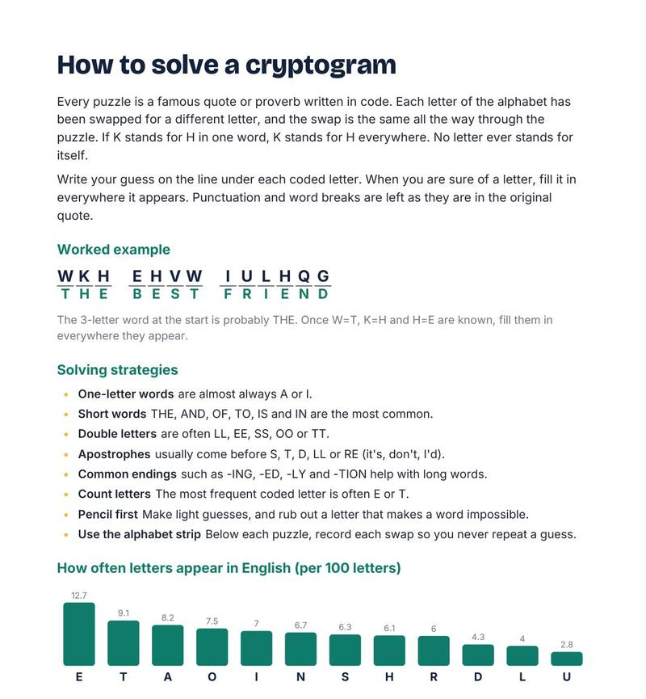
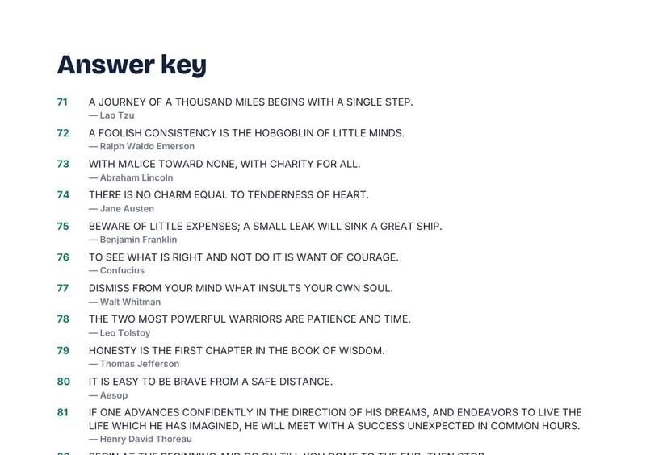

Cryptogram Puzzle Book: 120 Quotes in Code

A cryptogram is a famous quote written in code. Each letter has been swapped for another, and your job is to crack it, one clue at a time. This book gives you 120 of them, from gentle warm-ups to proper head-scratchers, with the author of every quote revealed in the answer key.
- 120 puzzles: 40 Easy (3 letters filled in), 40 Medium (1 letter filled in plus an author hint), 40 Hard (no hints)
- Quotes and proverbs from Shakespeare, Twain, Austen, Franklin, Dickinson, Lao Tzu, Seneca and more
- A letter key under every puzzle to record each swap
- How-to-solve page with strategies and a letter frequency chart, plus a progress tracker
- Full answer key with the author of every quote
- Two print-ready PDFs: US Letter (48 pages) and A4 (44 pages)
Preview




FAQ
What is a cryptogram? A coded quote. Every letter is swapped for another one, and you decode it by spotting patterns.
Is there an answer key? Yes, all 120 answers are at the back, with the author of each quote.
How do I get it? Instantly after payment: a US Letter PDF, an A4 PDF and a short README. Print at home.
We don't do refund & return ✌️